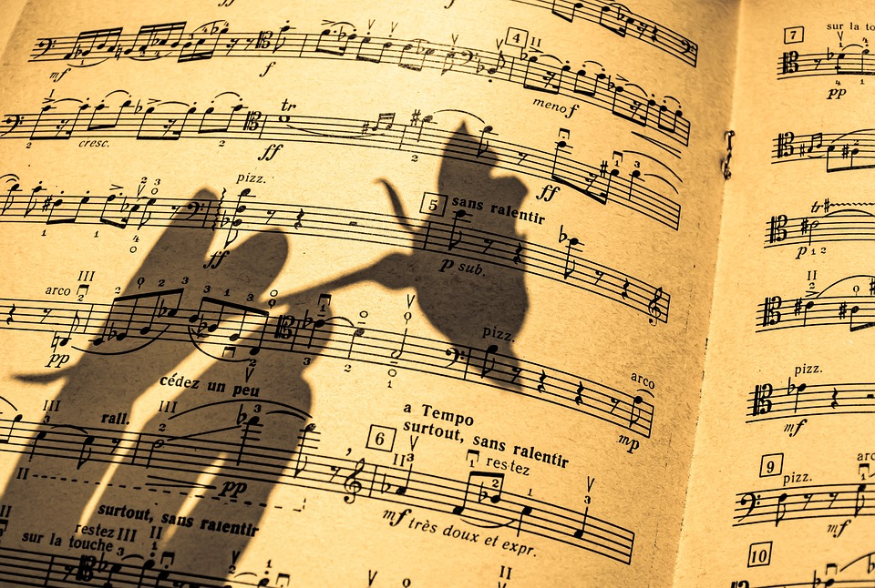
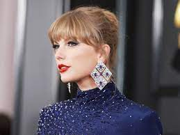

Los generos mas escuchados de 2023
Descubre emocionantes canciones en diferentes generos musicales
- 1. Genero Jazz/blues
Empezamos con el jazz, este surge de la mezcla de diferentes melodías y ritmos afro-norteamericanos. Este
género se caracteriza por no basarse en ninguna partitura de forma estructurada, entrando así dentro de los
grandes tipos de música 2023. La identidad musical del jazz es compleja y no puede ser delimitada con facilidad.
- 2. Genero Country
El country tradicional se tocaba esencialmente con instrumentos de cuerda, como la guitarra, el banjo, el
violín sencillo y el contrabajo. Aunque también intervenían frecuentemente el acordeón y la armónica, surgió en
los años 1920 en las regiones rurales del Sur de Estados Unidos.
- 3. Genero Musical mundial
Este tipo de música es un género musical contemporáneo creado para integrar en un concepto amplio toda la
música tradicional o folclórica, música popular, música étnica y otros géneros locales o característicos de
algunas
zonas o culturas del mundo en concreto que suelen ser de difícil categorización para el gran público. El
fenómeno de
la música universal se relaciona estrechamente con el de la globalización y la diversidad cultural. Aunque
actualmente predomina en Latinoamérica, es uno de los géneros musicales más escuchados.
- 4. Genero Musica Clasica

La música clásica contrasta con el período anterior por composiciones menos pesadas por el hecho de tener solo
una melodía principal que guía a todos los instrumentos. Esto hace que se conserve un mismo ritmo en una
sucesión
de acordes de estructura vertical llamada homofonía. Se ha comprobado cómo es beneficiaria para la salud, en
especial es buena para el cerebro y el corazón. Entre otras cosas, se dice que sirve para reducir el estrés,
mejorar el sueño, el estado de ánimo o incluso ayuda a plantas y animales. Es uno de los géneros más escuchados
en
toda la historia.
- 5. Genero Dance/Electronica
Este género pegó muy fuerte en los principios del 2000, poco a poco fue subiendo hasta convertirse en uno de
los
géneros más famosos y disfrutables en los mayores festivales del mundo. Este género emplea instrumentos
musicales
electrónicos y tecnología musical electrónica para su producción e interpretación. Entre los principales
instrumentos musicales electrónicos podemos considerar sampleadores, ordenadores o sintetizadores. Hoy en día es
muy famosa en plataformas como Spotify, sobre todo en Latinoamérica.
- 6. Genero musica Urbana
El género más revolucionario de los últimos años, este ha ido subiendo como espuma a lo largo de su
trayectoria,
aquí incluimos el Reggaetón, hip-hop, r&b, trap, etc… salidos especialmente de Latinoamérica. El nacimiento y
consolidación de la música urbana no solo ha servido para el divertimiento de las masas, sino que ha logrado
engrandecer una gran cantidad de artistas que reivindican su propia rebeldía ante el status que no quieren que
caiga en el olvido.
- 7. Genero Rock/Alternativa/Indie
El rock es un conjunto de géneros variados de música popular, descendientes más o menos del Rock n' Roll
original
nacido en los Estados Unidos en la década de 1950, como fruto de una fusión entre la música Country y el Rhythm
and Blues. La música alternativa es un término que engloba a todos los tipos de música que se contraponen a los
modelos oficiales comúnmente aceptados, estos géneros tienen en común la manera de producirse e interpretarse,
por
ello están entre los géneros musicales más escuchados en 2023.
- 8. Genero Pop
Y para terminar el TOP, venimos con el Pop, el género más escuchado del mundo en 2023. Este tipo de música
contemporánea es un estilo musical derivado de la música popular, más escuchada por los jóvenes. La música pop
se
origina en Inglaterra, a mediados del siglo XX, tomando elementos de distintos géneros de la música popular del
momento y la actualidad. Sus canciones se caracterizan por composiciones sencillas, basadas en una estructura
repetitiva verso-estribillo, éste último además acostumbra a ser pegadizo y fácil de recordar. Los ritmos y
melodías son de carácter ligero y las canciones duran de media entre tres o cuatro minutos.
Los podcast mas escuchados de este año
Descubre los mejores podcast de este año
- 1. Nadie sabe nada
Andreu Buenafuente, Berto Romero y un micrófono. ¿Qué puede salir mal? Nadie sabe nada es uno de los podcasts
de humor de referencia, donde Berto y Andreu hablan sin guión de los temas más extravagantes: colchones y sofás,
estrógeno o gallinas. Las ocurrencias de estos dos genios son oro para tus orejas.
- 2. Dias Extraños
Días Extraños es uno de los podcasts más escuchados en español, y el lugar donde Santiago Camacho habla de los
temas más extremos y controvertidos que normalmente quedan fuera del foco mediático: conspiraciones, secretos de
la historia, sucesos paranormales, ovnis, servicios secretos… ¡Y mucho misterio solo para ti!
- 3. The Wild Poryect
Si hablamos de podcasts famosos, no puede faltar en este top el del streamer Jordi Wild. Actualidad, deportes,
charlas con los invitados más interesantes, ciencia, misterio, anécdotas, curiosidades, debates, salseo… y
muchísimo más es lo que vas a encontrar en su podcast The Wild Project. ¿A qué esperas para escucharlo?
- 4. Segunda aceptacion
Este es sin duda uno de los podcasts revelación de 2023, y en cada uno de sus episodios los humoristas Ignatius
Farray y Miguel Maldonado redefinen con gracia conceptos de la lengua española como la vergüenza, el tiempo o el
amor. ¡A pesar de su reciente creación ya es uno de los podcasts más famosos de España!
- 5. Lo que tu digas
Alex Fidalgo recibe en su casa a las personalidades más interesantes e influyentes para mantener una charla
íntima, espontánea e impredecible. Por sus micros han pasado actores como Martiño Rivas, deportistas de élite
como Almudena Cid o youtubers como Villano Fitness; todos ellos muestran su cara más desconocida en un podcast
de entrevistas diferente.
- 6. Cuarto Milenio
Dirigido y presentado por los periodistas Iker Jiménez y Carmen Porter, en Cuarto Milenio encontrarás tratados
con rigor y con los mejores expertos temas relacionados con el mundo del misterio y lo desconocido, como
conspiraciones, ocultismos, ufología y hechos paranormales. ¿Te atreves a escucharlo?
- 7. Casus Belli
Este podcast de historia bélica de siglo XX y XXI es un esencial en el mundo de los podcasts en español. Nos da
a conocer las batallas más famosas, los personajes clave en la geopolítica mundial y todo lo que rodea la
guerra, para comprender mejor cómo funciona el mundo. Si tienes hambre de conocimiento, no esperes más y dale al
play.
- 8. El Partidazo de COPE
Presentado por Juanma Castaño, El Partidazo de COPE resume la actualidad deportiva charlando con los
protagonistas de la noticia. Si quieres estar al día de la última hora en el ámbito del fútbol y los deportes,
este es tu podcast.
Top 10 artistas mas escuchados
Estos son los artistas mas escuchados de 2023
- 1. The weekend (110,21 M)
Con una voz inconfundible y un estilo único que combina R&B y pop, The Weeknd ha cautivado a millones de
oyentes en todo el mundo. Su éxito en julio de 2023 se debe, en parte, a su último álbum aclamado por la crítica
que lo mantiene arriba
desde hace meses y a su participación en bandas sonoras de películas y series de televisión como la suya propia:
“The Idol”.
- 2. Taylor Swift (99,17 M)

La reinventada y versátil Taylor Swift se ha ganado un lugar especial en el corazón de los fanáticos de la
música pop y country.
Su habilidad para contar historias a través de sus canciones ha resonado con oyentes de todas las edades,
asegurándole un puesto en la lista de los más escuchados. Este año ha alegrado la vida a sus fans lanzando
“Speak Now (Taylor's Version), que es la regrabación de su tercer álbum, 'Speak Now'.
- 3. Bad Bunny (80,84 M)
Bad Bunny continúa arrasando con su música contagiosa y letras pegajosas. Su estilo vanguardista y
colaboraciones con otros artistas de renombre le han asegurado un lugar privilegiado en el podio de Spotify.
Es, además, uno de los reyes del verano con su música. Su última aparición ha sido nada menos que en el
esperadísimo 'UTOPIA' de Travis Scott, concretamente en la canción 'K-POP' junto a The Weeknd. ¿Hace falta
hablar de popularidad, o te lo acabamos de decir todo?
- 4. Ed Sheeran (79,49 M)
El carismático cantautor británico, Ed Sheeran, ha demostrado que su talento trasciende géneros musicales. Su
habilidad para componer baladas emotivas y canciones pegadizas le ha granjeado una base de fans leal que lo
sigue en cada paso de su carrera.
Además, este año ha sacado (Deluxe), la dosis de música que sus fans necesitaban y los que no lo eran
necesitarán una vez empiecen a escucharlo.
- 5. Rihanna (74,48 M)
Aunque se ha mantenido alejada de la música durante algún tiempo, la icónica Rihanna sigue siendo una de las
artistas más escuchadas en Spotify.
Su impacto en la industria y su legado musical continúan atrayendo a oyentes de todas partes del mundo, pase el
tiempo que pase. Eso sí, seguimos rezando por un nuevo álbum.
- 6. David Guetta (73,25 M)
El rey de la música electrónica, David Guetta, ha mantenido su reinado en las listas de reproducción de
Spotify. Sus contagiosos beats y colaboraciones con diversos artistas lo convierten en un favorito de la escena
electrónica y pop.
Últimamente hemos podido escucharlo junto a Coi Leray y Anne-Marie en “Baby Don't Hurt Me” y también con MORTEN
y Clementine Douglas en 'Something To Hold On To'
- 7. Dua Lipa (72,80 M)
Con su energía única y carisma desbordante, Dua Lipa ha conquistado la industria musical. Sus éxitos bailables
y poderosos himnos la han convertido en una de las voces más destacadas de su generación.
'Dance The Night' ha sido su última aportación musical, nada menos que para la aclamadísima película de
“Barbie”.
- 8. Justin Bieber (72,46 M)
Desde que comenzó su carrera en la adolescencia, Justin Bieber ha sido una sensación global. Su evolución
musical y conexiones emocionales con su audiencia han asegurado que siga siendo un referente en la música
contemporánea.
Entre sus últimos lanzamientos encontramos su unión con Don Toliver y Future en 'Private Landing' . Un hit que
ha estado sonando en todas partes.